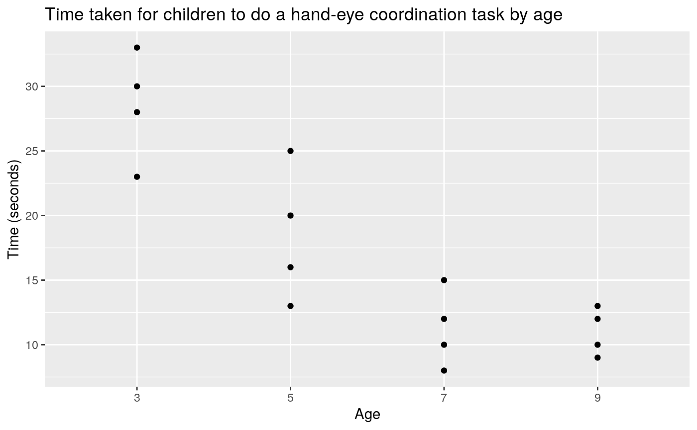
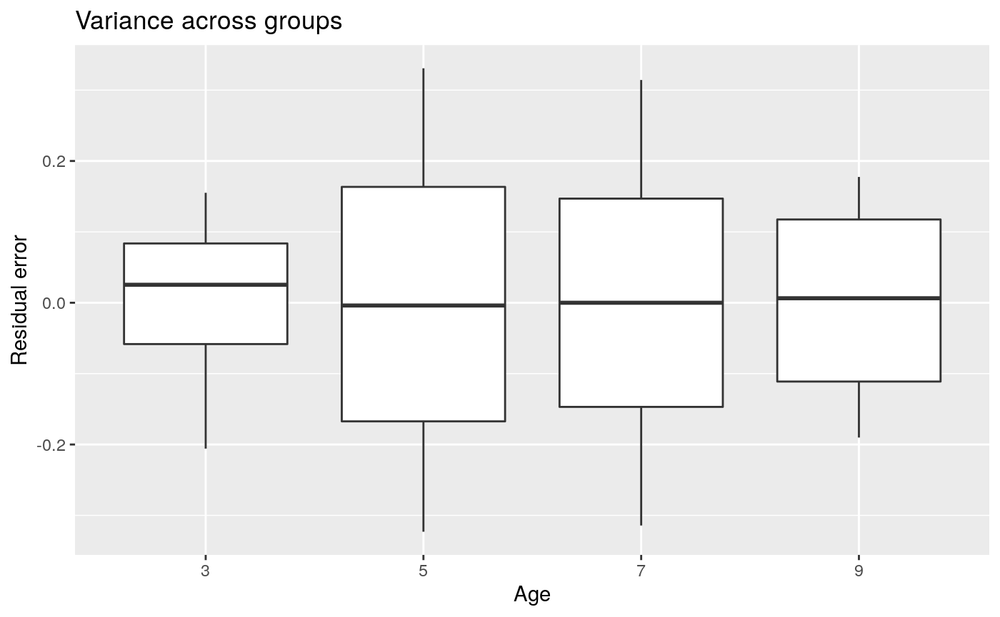
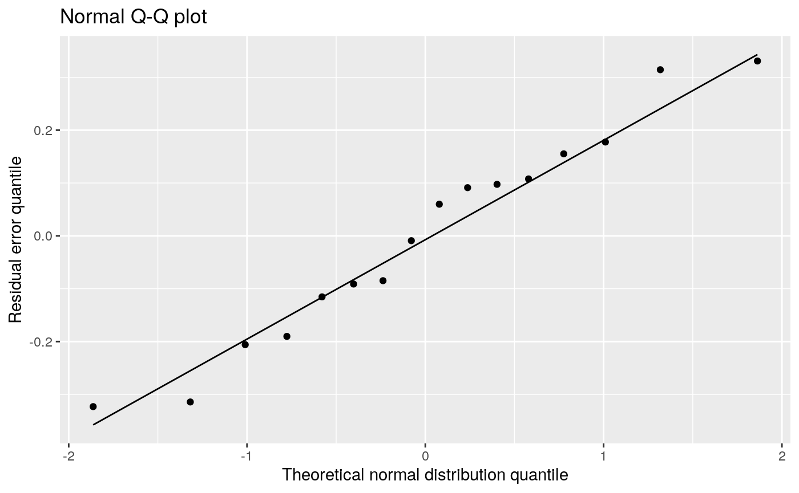
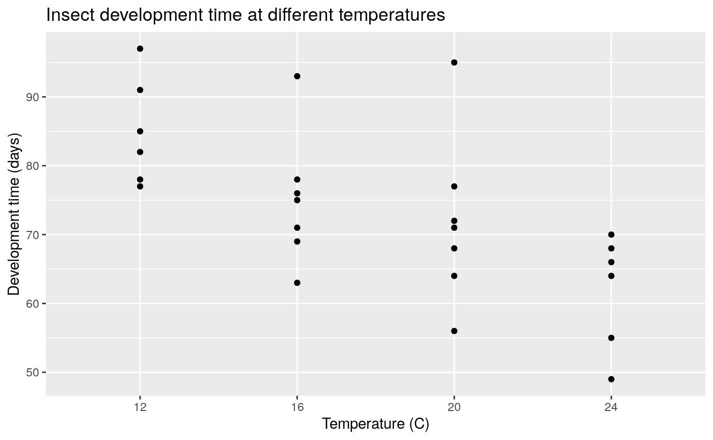
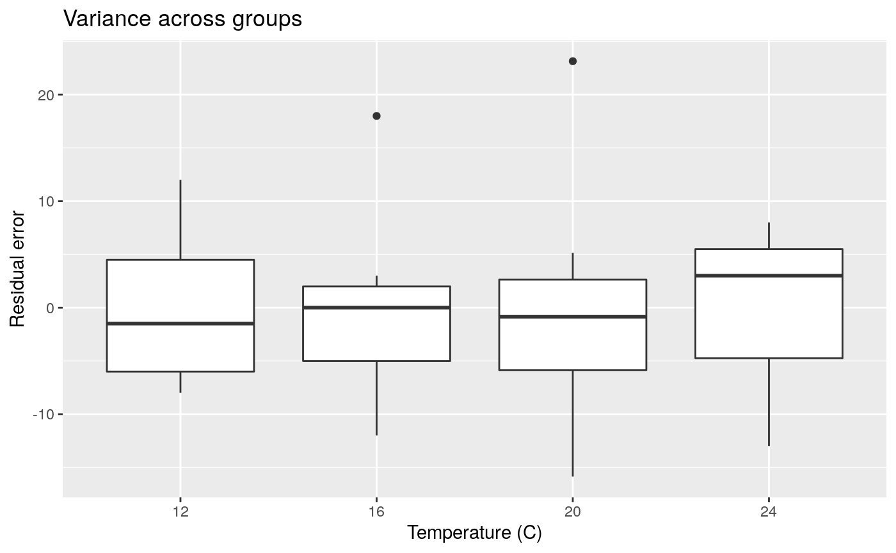
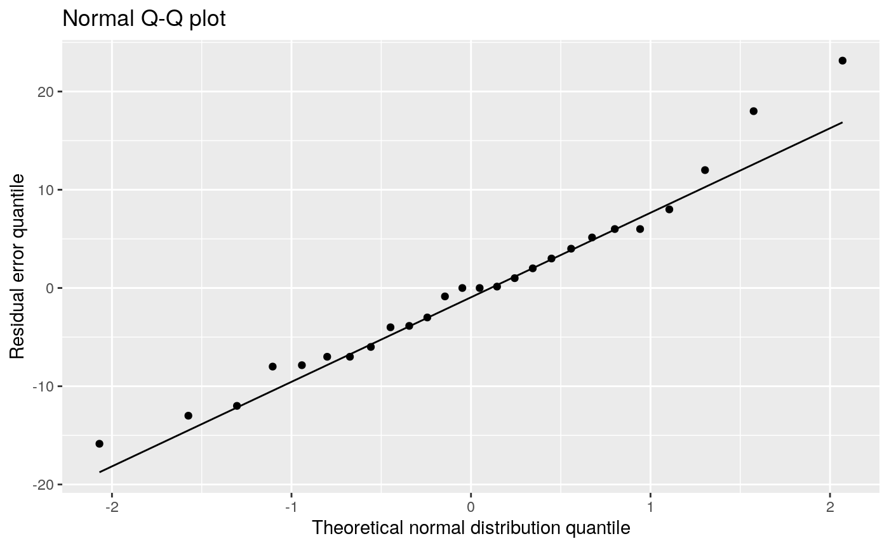
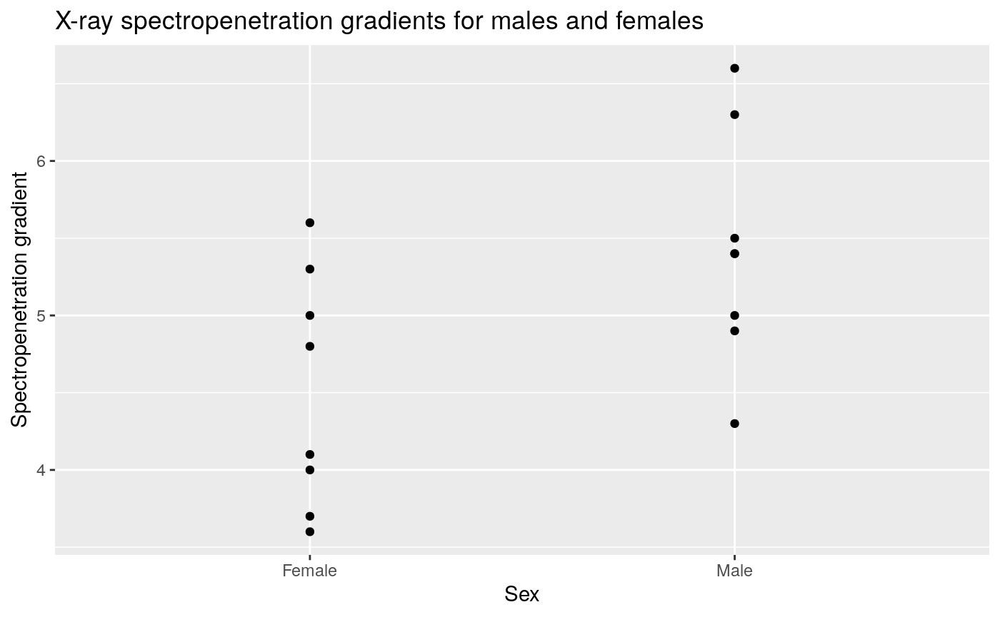
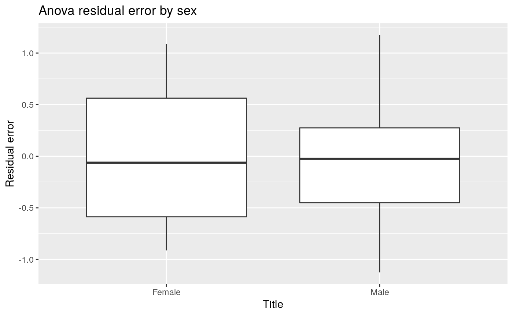
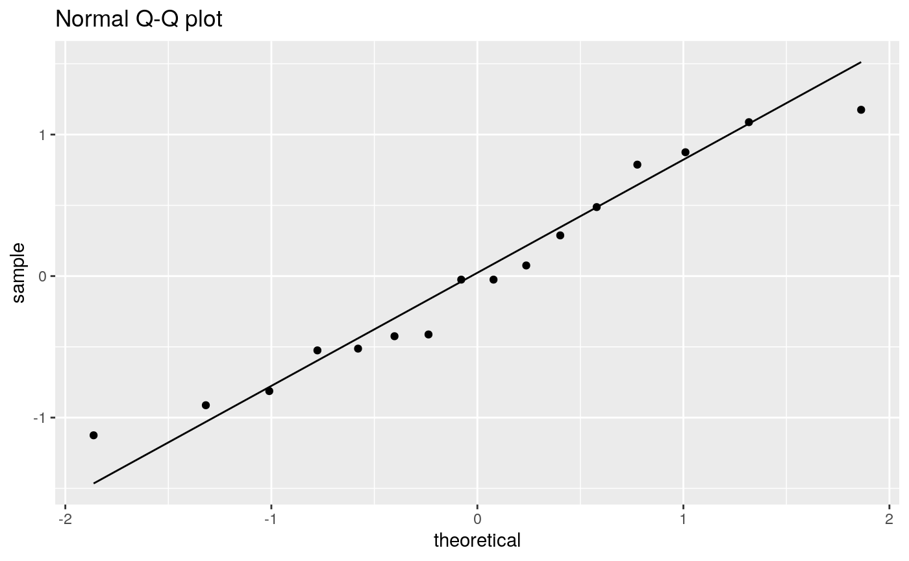

a).
It is acceptable to perform a Chi-squared test of independence, because:
This is the category of tourists with a neutral biodiversity protection attitude and that photography at the national park.
row_total <- 19 + 4 + 31 col_total <- 4 + 21 grand_total <- 19 + 4 + 31 + 42 + 21 + 48 row_total * col_total / grand_total
## [1] 8.181818However, the biodiversity protection attitude variable is an ordinal varaiable, and as such it is preferable to use a test that accounts for this (e.g. linear by linear test).
b).
Hypothesis:
Analysis method:
Perform a Pearson and likelihood ratio chi-square test of independence with a significance level of 0.05.
Results:
matrix <- matrix(c(19, 4, 31, 42, 21, 48), nrow = 2, ncol = 3, byrow = T) chisq.test(matrix, correct = FALSE)
##
## Pearson's Chi-squared test
##
## data: matrix
## X-squared = 4.7685, df = 2, p-value = 0.09216# DescTools::GTest(matrix, correct = "none")
Conclusion:
Do not reject the null hypothesis at the 0.05 significance level for both statistical tests. There is insufficient evidence that biodiversity protection attitude and photography at a national park are not independent.
a).
odds1 <- 38 / 400 odds2 <- 5 / 156 theta <- odds1 / odds2 round(theta, digits = 3)
## [1] 2.964(38 * 156) / (400 * 5)
## [1] 2.964The odds that a respondent participated in 4-wheel driving was 2.964 times higher for those that engaged in photography.
b).
log_theta <- log(theta) alpha <- 0.05 z <- qnorm(c(alpha / 2, 1 - alpha / 2)) log_se <- sqrt(1 / 38 + 1 / 400 + 1 / 5 + 1 / 156) log_ci <- log_theta + z * log_se ci <- exp(log_ci) round(ci, digits = 3)
## [1] 1.146 7.669c).
Hypothesis:
H0: Tourist photography and 4-wheel drive participation at a national park are independent (i.e. theta = 1) H0: Tourist photography and 4-wheel drive participation at a national park are not independent (i.e. theta ≠ 1)
Analysis method:
PErform a Pearson chi-square test of independence with a significance level of 0.05.
Results:
matrix <- matrix(c(38, 400, 5, 156), nrow = 2, ncol = 2, byrow = TRUE) chisq.test(matrix, correct = FALSE)
##
## Pearson's Chi-squared test
##
## data: matrix
## X-squared = 5.4818, df = 1, p-value = 0.01921Conclusion:
Do not reject the null hypothesis at the 0.05 significance level. There is insufficient evidence that tourist photography and 4-wheel drive participation at a national park are not independent.
a).
Make dataframe:
age <- rep(c(3, 5, 7, 9), each = 4) time <- c(23, 30, 28, 33, 20, 16, 13, 25, 10, 8, 15, 12, 10, 12, 9, 13) data <- tibble(age, time) %>% mutate(age = factor(age, levels = c("3", "5", "7", "9"))) %>% mutate(log_time = log(time))
Visualise data:
ggplot(data) + geom_point(aes(age, time)) + labs(title = "Time taken for children to do a hand-eye coordination task by age", x = "Age", y = "Time (seconds)")

Perform ANOVA:
## Df Sum Sq Mean Sq F value Pr(>F)
## age 3 2.5084 0.8361 16.52 0.000147 ***
## Residuals 12 0.6075 0.0506
## ---
## Signif. codes: 0 '***' 0.001 '**' 0.01 '*' 0.05 '.' 0.1 ' ' 1data <- augment(anova)
Check ANOVA constant variance assumption:
ggplot(data) + geom_boxplot(aes(age, .resid)) + labs(title = "Variance across groups", x = "Age", y = "Residual error")

# car::leveneTest(log_time ~ age, data, center = "mean")
Check ANOVA normality of residual error assumption:
# qqnorm(anova$residuals) # qqline(anova$residuals) ggplot(data) + geom_qq(aes(sample = .resid)) + geom_qq_line(aes(sample = .resid)) + labs(title = "Normal Q-Q plot", x = "Theoretical normal distribution quantile", y = "Residual error quantile")

Perform non-parametric test:
kruskal.test(log_time ~ age, data)
##
## Kruskal-Wallis rank sum test
##
## data: log_time by age
## Kruskal-Wallis chi-squared = 11.638, df = 3, p-value = 0.008733b).
Hypothesis:
Analysis method:
Perform an ANOVA test with significance level of 0.05.
Model equation:
log(Yij) = μi + Eij, where Eij ∼ N(0, σ2)
Assumptions:
Conclusion:
Reject the null hyothesis and accept the alternative hypothesis at the 0.05 significance level (p = 0.0001). The mean time taken to do a hand-eye coordination task differs in 3, 5, 7 and 9 year old children.
a).
Make data frame:
days <- c(78, 91, 97, 82, 85, 77, NA, 75, 93, 78, 71, 63, 76, 69, 64, 72, 68, 77, 56, 95, 71, 55, 66, 49, 64, 70, 68, NA) temp <- rep(c(12, 16, 20, 24), each = 7) data <- tibble(temp, days) %>% filter(!is.na(days)) %>% mutate(temp = factor(temp, levels = c("12", "16", "20", "24")))
Visualise data:
ggplot(data) + geom_point(aes(temp, days)) + labs(x = "Temperature (C)", y = "Development time (days)", title = "Insect development time at different temperatures")

Perform ANOVA:
## Df Sum Sq Mean Sq F value Pr(>F)
## temp 3 1622 540.5 5.77 0.00455 **
## Residuals 22 2061 93.7
## ---
## Signif. codes: 0 '***' 0.001 '**' 0.01 '*' 0.05 '.' 0.1 ' ' 1data <- augment(anova)
Check ANOVA constant variance assumption:
ggplot(data) + geom_boxplot(aes(temp, .resid)) + labs(title = "Variance across groups", x = "Temperature (C)", y = "Residual error")

# car::leveneTest(days ~ temp, data, center = "mean")
Check ANOVA normality of residual error assumption:
# qqnorm(anova$residuals) # qqline(anova$residuals) ggplot(data) + geom_qq(aes(sample = .resid)) + geom_qq_line(aes(sample = .resid)) + labs(title = "Normal Q-Q plot", x = "Theoretical normal distribution quantile", y = "Residual error quantile")

b).
Perform Tukey test:
TukeyHSD(anova)
## Tukey multiple comparisons of means
## 95% family-wise confidence level
##
## Fit: aov(formula = days ~ temp, data = data)
##
## $temp
## diff lwr upr p adj
## 16-12 -10.000000 -24.95236 4.952363 0.2747883
## 20-12 -13.142857 -28.09522 1.809505 0.0984799
## 24-12 -23.000000 -38.51680 -7.483200 0.0023828
## 20-16 -3.142857 -17.50862 11.222908 0.9286069
## 24-16 -13.000000 -27.95236 1.952363 0.1036498
## 24-20 -9.857143 -24.80951 5.095220 0.2862932c).
Hypothesis:
Analysis method:
Perform an ANOVA test with significance level of 0.05. If significant result, perform Tukey test with significance level of p = 0.05.
Model equation:
Yij = μi + Eij, where Eij ∼ N(0, σ2)
Assumptions:
Conclusion:
Reject the null hyothesis and accept the alternative hypothesis at the 0.05 significance level. The mean development time of insects differs at 12, 16, 20 and 24 degrees. A Tukey test only showed a significant difference between 12 and 24 degrees, and no significant differences at other combinations of temperatures (e.g. between 16 and 20 degrees).
###Question 5
a). Observations would not all be independent of each other.
b). For tests comparing means, the greatest precision occurs in balanced designs where groups are of equal size. Therefore, for a sample size of 16 subjects, the researcher’s experiment has the greatest power to identify a significant difference in male and female spectropenetration gradient, if half of the subjects are male and half female.
c).
Make the data frame
sex <- rep(c("Female", "Male"), each = 8) spectro <- c(4.8, 5.3, 3.7, 4.1, 5.6, 4.0, 3.6, 5.0, 4.9, 5.4, 5.0, 5.5, 5.4, 6.6, 6.3, 4.3) data <- tibble(sex, spectro) %>% mutate(sex = factor(sex))
Visualise the data.
ggplot(data) + geom_point(aes(sex, spectro)) + labs(title = "X-ray spectropenetration gradients for males and females", x = "Sex", y = "Spectropenetration gradient")
 Perform ANOVA:
## Df Sum Sq Mean Sq F value Pr(>F)
## sex 1 3.331 3.331 5.885 0.0294 *
## Residuals 14 7.924 0.566
## ---
## Signif. codes: 0 '***' 0.001 '**' 0.01 '*' 0.05 '.' 0.1 ' ' 1data <- augment(anova)
Check ANOVA constant variance across groups assumption:
ggplot(data) + geom_boxplot(aes(sex, .resid)) + labs(title = "Anova residual error by sex", x = "Title", y = "Residual error")

# car::leveneTest(spectro ~ sex, data, center = "mean")
Check ANOVA normality of residual error assumption
ggplot(data) + geom_qq(aes(sample = .resid)) + geom_qq_line(aes(sample = .resid)) + labs(title = "Normal Q-Q plot")

Hypothesis:
Analysis method:
Perform an ANOVA test with significance level of 0.05. If significant result, perform Tukey test with significance level of p = 0.05.
Model equation:
Yij = μi + Eij, where Eij ∼ N(0, σ2)
Assumptions:
Conclusion:
Reject the null hypothesis and accept the alternative hypothesis at the 0.05 significance level. The mean spectropenetration gradient is different between males and females.
d).
There is no point doing a Tukey test, as there is only two groups and we already have confirmed there is a signficant difference between these two groups.